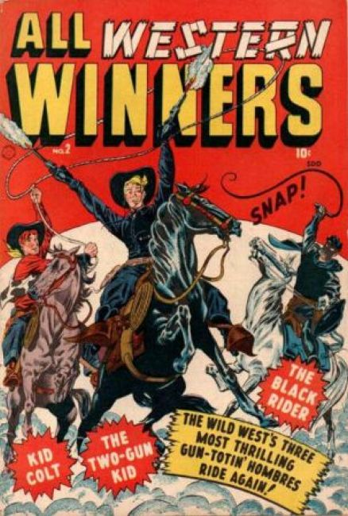
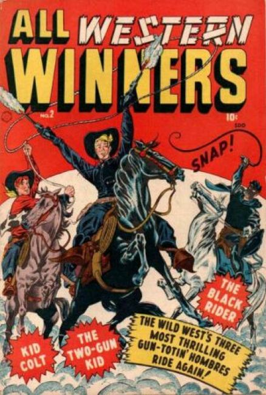
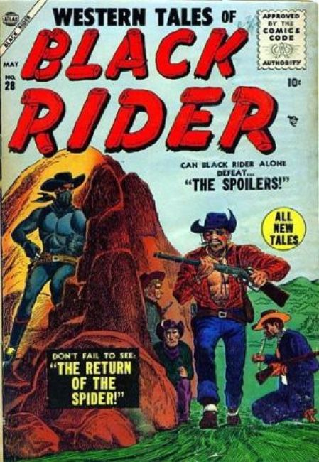
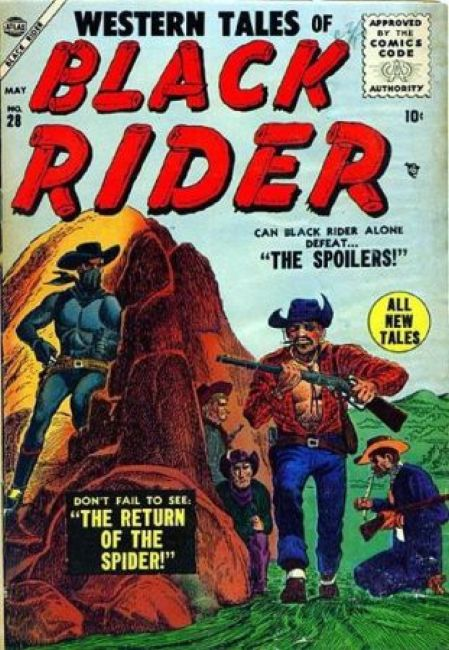

 


Note: This title has nothing to do with Timely Comics All Winners 1941 Series.
About: All Winners #1 becomes, All Western Winners #2-4, then Western Winners #5-7, then Black Rider #8-27, then Western Tales of Black Rider #28-31, then Gunsmoke Western #32-77.